Home / Gallery
Gallery
Screenshots of the app and outputs from real CUBE runs on open field and elevated plus maze recordings. Click any figure to enlarge it.

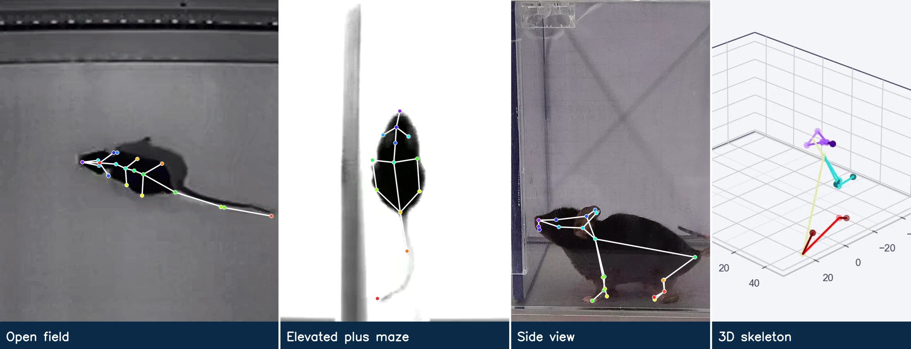
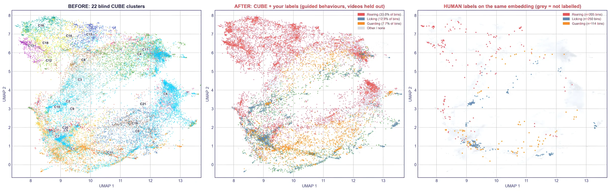
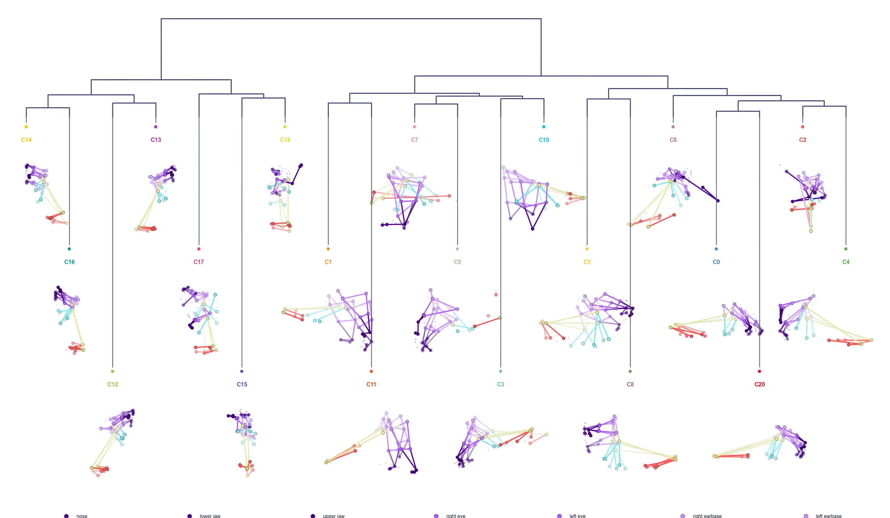
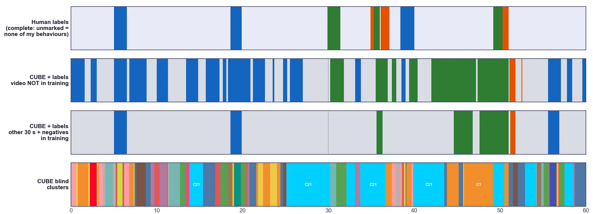
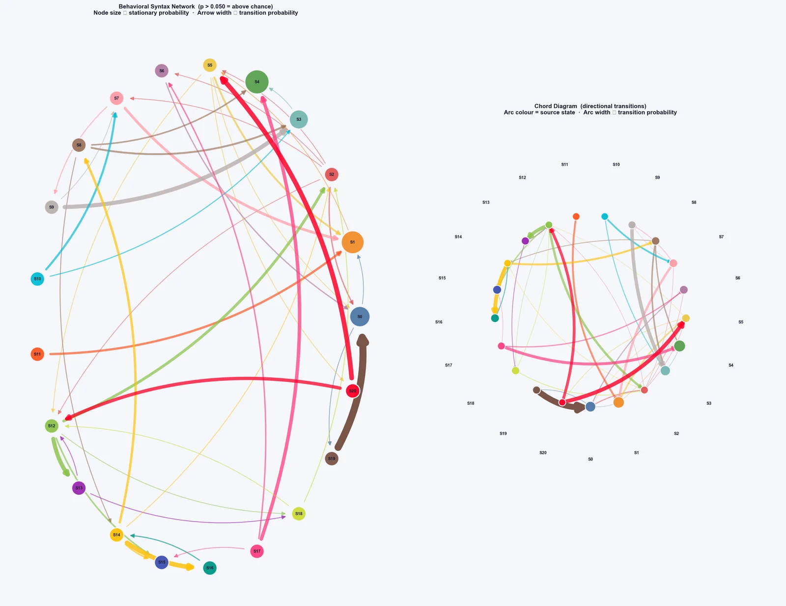
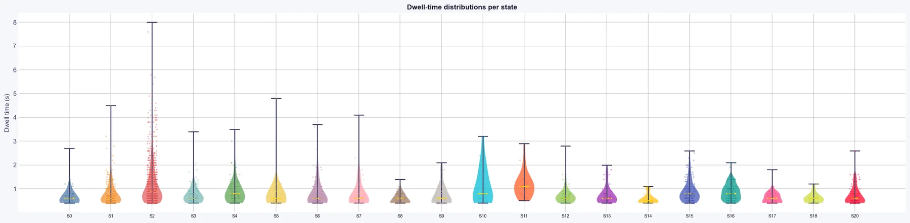
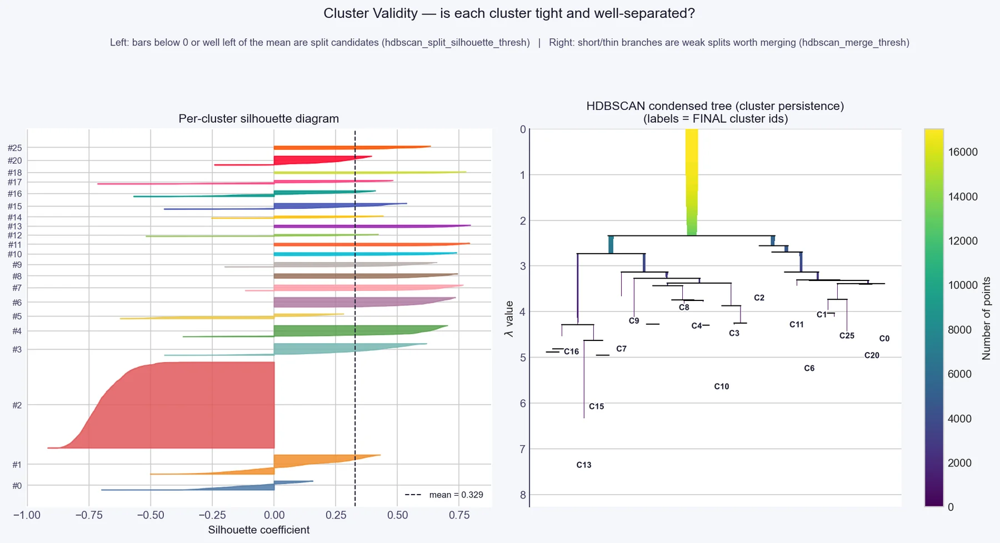
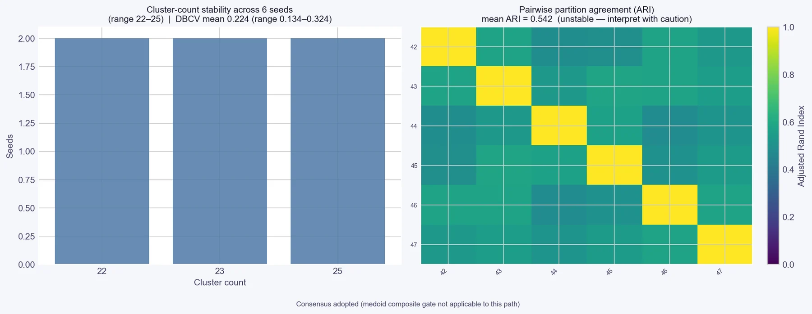


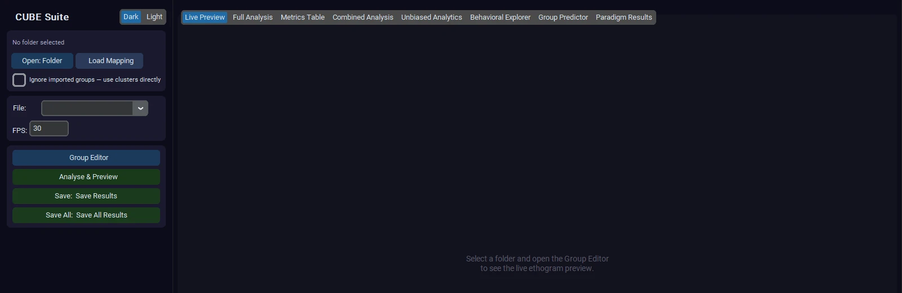

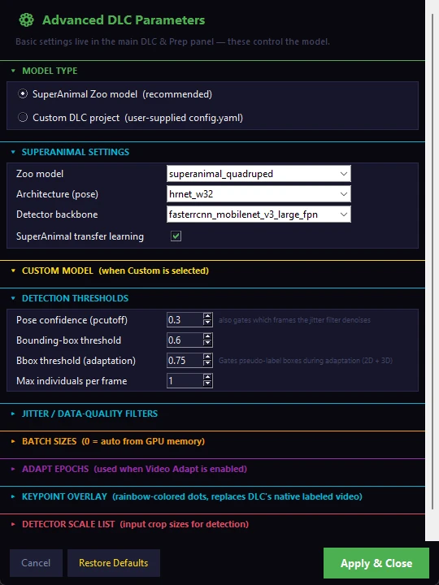


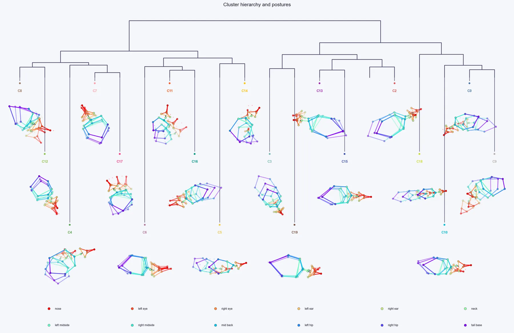

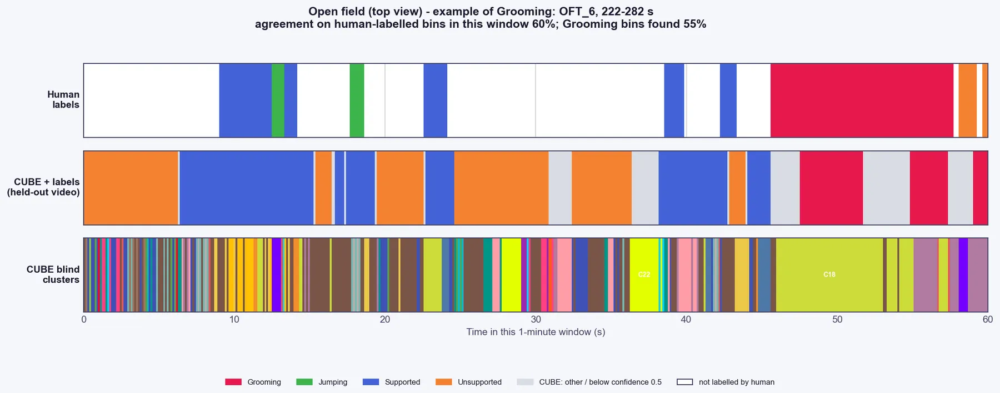

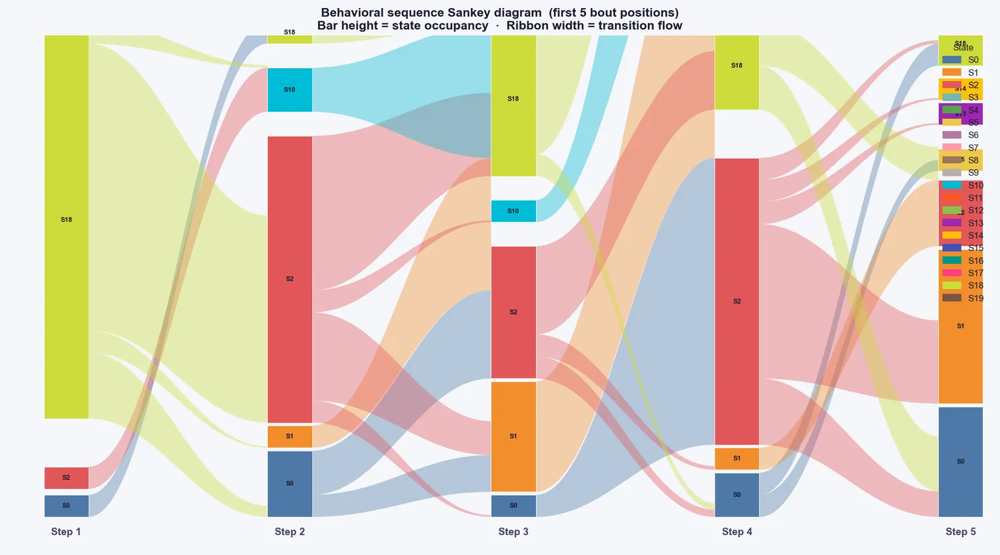
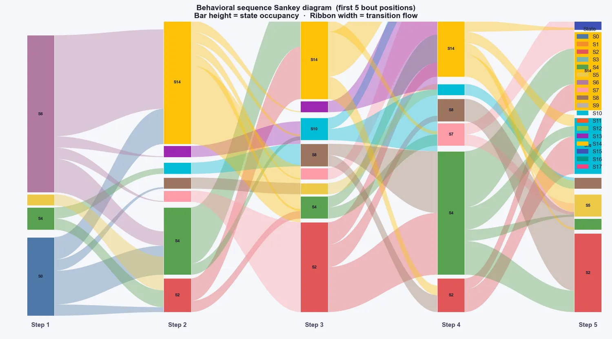
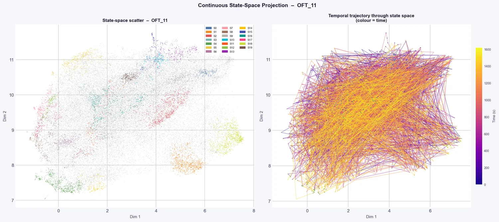
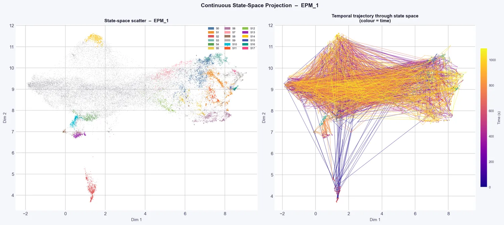
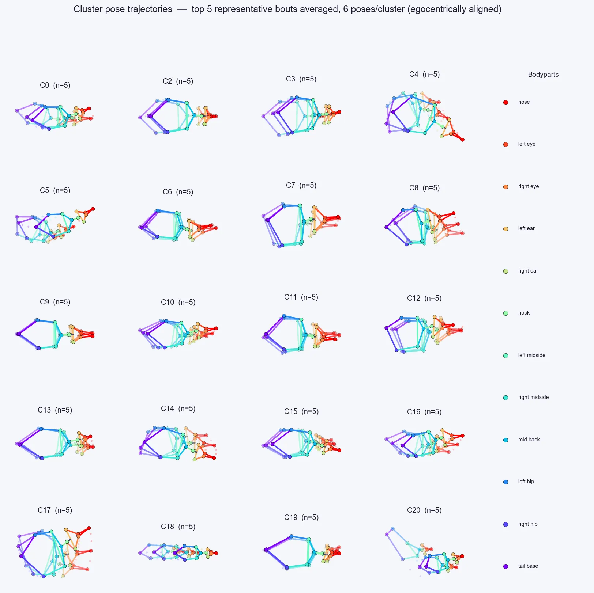
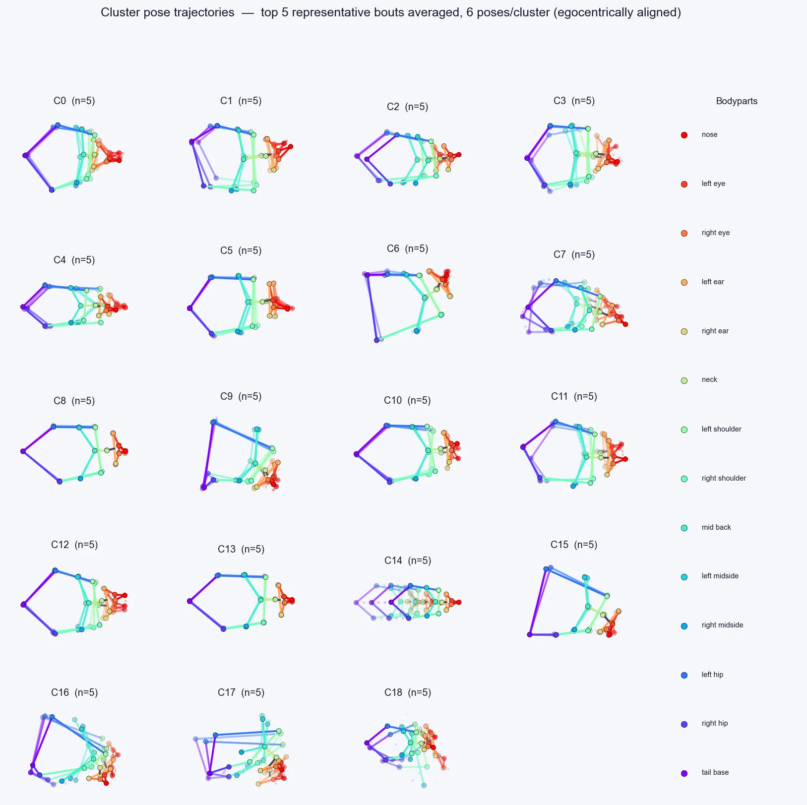
All examples use the public open field and elevated plus maze data of Sturman et al. (2020), Neuropsychopharmacology 45:1942-1952.